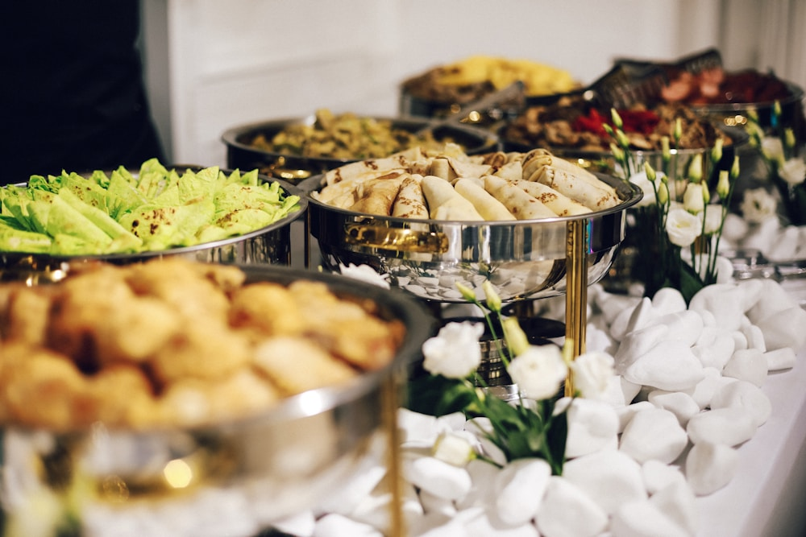

Founded along the dramatic coastal bluffs and oak-studded valleys of Santa Barbara, SunsetTableGo reclaims the ancient ritual of communal open-hearth dining at twilight.
In modern dining culture, meals are increasingly confined to enclosed restaurant boxes, artificial LED illumination, and hurried schedules disconnected from the natural cadence of the day. SunsetTableGo was founded by a collective of open-flame chefs, regenerative farmers, and architectural naturalists who believe that the most profound culinary experiences occur outdoors, illuminated by the shifting golden spectrum of the setting sun.
By bringing nomadic long tables directly to the land where food is cultivated—overlooking ocean tidepools, nestled inside centenary olive orchards, and perched atop mountain ridges—we create immersive sensory environments where guests reconnect with natural circadian rhythms and regional agricultural terroir.
Our mobile hearths utilize aged white oak, dried olive orchard prunings, and applewood branches harvested during sustainable orchard thinning. Cooking over open embers requires profound patience, intuition, and sensory mastery. We utilize cast-iron grates, hanging copper caldrons, and direct wood-ember roasting techniques that draw out the innate sweetness, mineral complexity, and earthy aromatics of freshly harvested ingredients.
